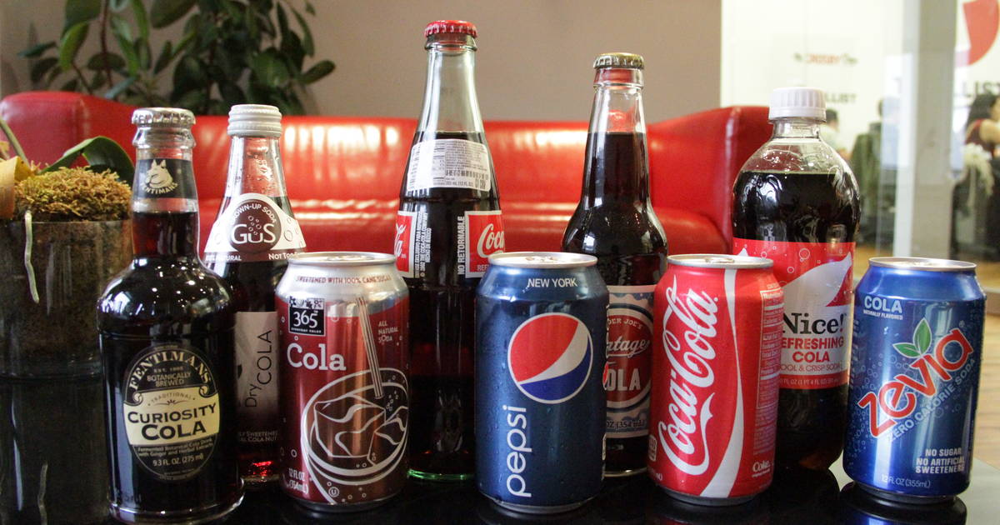

The purpose of this survey is to determine the user's favorite cola brand.
"Happiness is like coke - something you get as a by-product in the process of making something else." - Aldous Huxley
Being the most popular form of soft drink in the world, approximately 1.7 billion servings of cola are consumed globally each day. Throughout history, cola has provided happiness to countless individuals across the world with its unmatched deliciousness. It is evident that cola has played a huge role in shaping today's society, and that is when the brilliant mind behind this survey suspected that one's individuality could be generalized by their cola preference.
This survey goes beyond simply asking about your favorite brand. This psychological study requires more detailed information to prove the hypothesis. You must explain why your chosen brand is your favorite and list the factors that differentiate it from other brands.